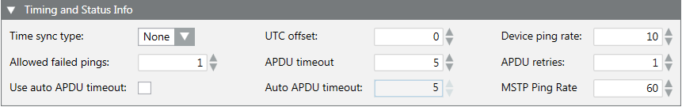

Timing and Status Info

The Timing and Status Info expander allows you to configure the BACnet device timing and communication settings. Events received from the subsystem and displayed on the management station are time-stamped by the subsystem. To avoid inconsistencies, the clock of the subsystem must be aligned with the clock on the management stations.
For device failures, you can use the following equation to help select timing and status settings:
Time-to-failure alarm = APDU timeout * (retries + 1) * (Pings to failure)
The number of pinging threads on the driver controls how many panels are talked to in parallel. For example, if you have 30 threads and 60 panels, the time-to-failure alarm can take 2 times longer.
Timing and Status Info | |
Item | Description |
Time sync type | None. This option is the default value and prevents the management station from synchronizing the subsystem. If clocks differ, inconsistent timestamps display. Local Time. The UTC offset is used to calculate the local time for the device. If you have some devices in different time zones, you can override the local time for any device. UTC. UTC time is used to synchronize the device. |
Allowed failed pings | The number of failed pings before the driver declares the device as failed (the default is 1). |
Use auto APDU timeout | Select the check box to allow the system to determine the best timeout for requests. In a device with a long timeout—60 to 90 seconds for example—the APDU timeout function sends a real-time performance monitoring probe to the device. The probe determines how quickly the device answers. If the device answers in 15 seconds, the APDU timeout is set to a value slightly longer than 15 seconds. The value maximum is 60 seconds. |
UTC offset | Used to calculate the local time for the device. Regardless of the Time sync type, changing the UTC offset value will change the time stamps for BACnet devices that do not have the UTC offset. The BACnet driver uses this value to convert local time to UTC. |
APDU timeout | The APDU timeout, in seconds (the default is 5). |
Auto APDU timeout | The Auto APDU timeout, in seconds (the default is 5). |
Device ping rate | The rate, in seconds, at which the driver pings the device (the default is 10). |
APDU retries | The APDU number of attempts to establish communication after a timeout (the default is 1). |
MSTP ping rate | Ping rate, in seconds, for the Master/Slave Token Passing protocol (the default is 60). |